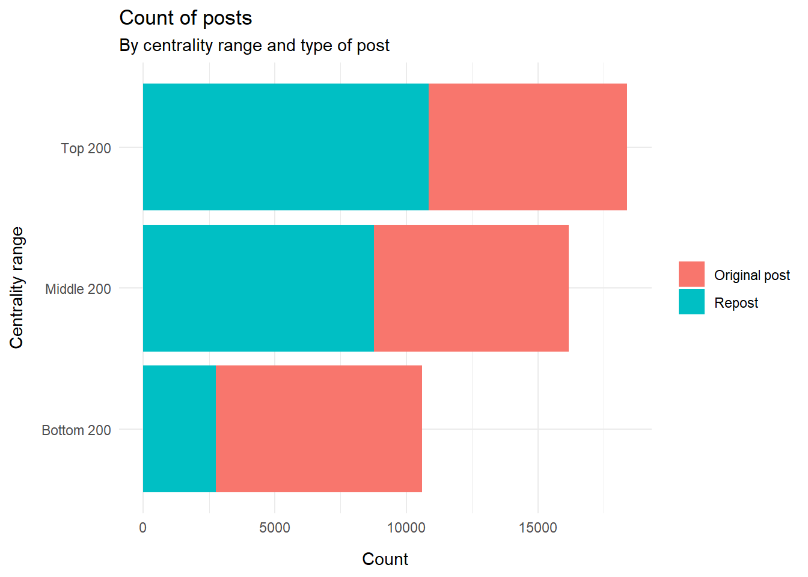
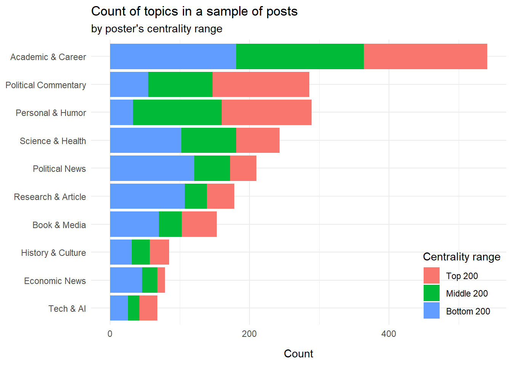
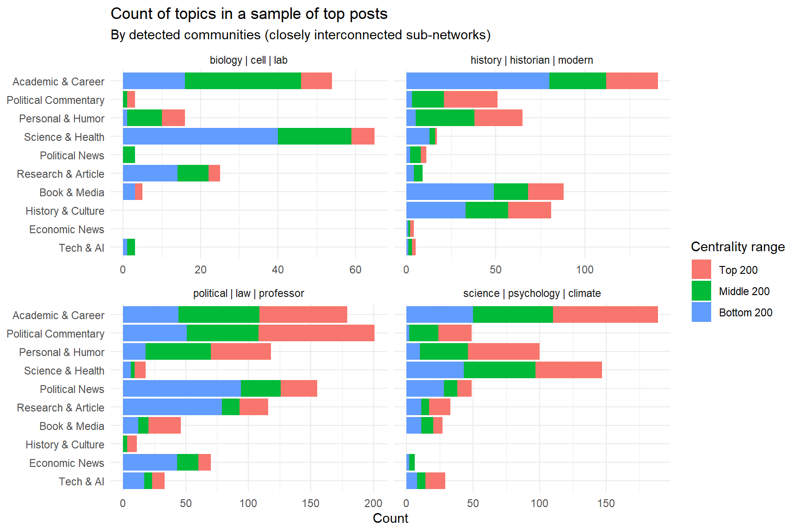
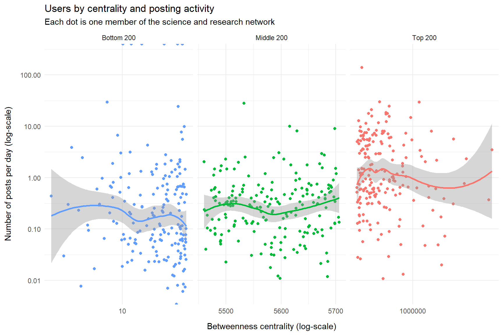

More postings
Follow-up to earlier exploration of posts from the science and research community
What is this?
This is a follow up to the note with an exploratory analysis of posts from the most influential members in the science and research network on Bluesky. There, we saw that a fair chunk of posts was not strictly science (as in ‘I published this nice paper’) but more political in nature (as in ‘The way the current administration is slashing research funding is very wrong’).
For that analysis we looked at the top-influential members, but I wonder if the less well-connected majority have a different posting pattern.
To shed some light on that, I:
Updated the network (this was due for a refresh anyway).
Collected fresh data with posts, this time not only from the top-200 members, but also from the middle-200 and bottom-200 members, as measured by the ‘betweenness centrality’ metric (explained here).
By comparing with the earlier plots it should be possible to figure out if the distribution of topics in posts vary substantially between the top-, middle, and bottom segments. Also, it’s nice to confirm if the results we got earlier is roughly stable.
This is a relatively short note; I will mostly focus on splitting a few of the key charts from the earlier note by the mentioned strata.
The data
We look at a total of 45172 posts from members of the network, using the network update from 2025-09-19. We collected the posts at 2025-09-30. The posts are from a total of 585 network members.
Counting the posts by centrality range and by repost/non-repost, we see:
It appears that the top-centrality-members account for a disproportionately large chunk of the posts, because this segment has many reposts. That is perhaps not surprising; they have many connections and are therefore probably exposed to more material fit for resposting.
Most popular topics
Like in the original analysis, we had Google’s large language model, ‘Gemini 2.5 flash’ to label the posts by topics. The labels are similar but not identical to the ones we retrieved last time around. It’s a bit uncertain if that is due to:
change in data (new users added, new posts collected), or
the inherent variation in responses from chatbots, or
good ol’ statistical variations; this is not a huge sample.
Still, the overall picture is similar. At first glance, politics occupies less space, but this is because it is now split into ‘Political Commentary’ and ‘Political News’, so overall politics is about as frequent as ‘Academic & Career’ like in the earlier plot.
We do see that ‘Political Commentary’ is more often from users in the top 200 centrality range, whereas ‘Research & Article’ is mostly from the bottom 200 centrality range. (However for ‘Political News’, it is the other way around.)
So to some extent the suspicion is confirmed: The most influential network members do have different preferences for topics they post about, leaning more towards politics than traditional science-related topics.

We could also split those topics by community. Communities are basically parts of the larger network that are particularly dense, i.e. interconnected. In practice, communities reflect mostly different research fields (although of course there are also many interdisciplinary connections between members of different communities).
In the plot, each community is labeled with the most common words in members’ description.

There are some differences in what the communities like to talk about, some are not too surprising: Users with ‘biology’ in their descriptions like to post about ‘Science & Health’, while ‘history’ comes with a tendency to post about ‘History & Culture’.
Lots of examples
To get a better feel for how actual posts look like, let’s pull out lots of examples, still filtering out reposts. Posts are grouped by topic, and we have information about the poster’s centrality range, and the number of likes each post has received. It’s kind of fun to browse:
Posting activity
Finally, let us also update the chart we had on posting frequency. In the earlier plot I was a bit surprised to not see a correlation between centrality and posting activity. But when we include the full range of centralities, there is indeed some degree of correlation: The top 200 posters do post more frequently than the middle 200, who in turn post more frequently than the bottom 200.
